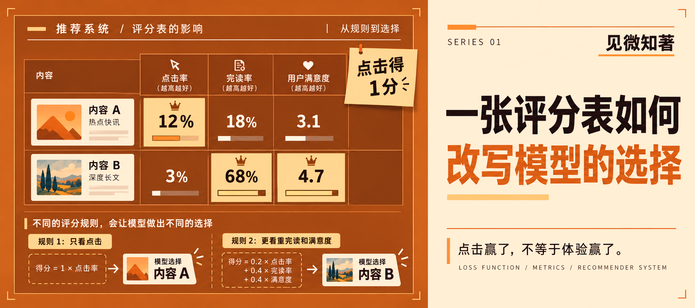

预计阅读时长：约 12 分钟
一个推荐系统把点击率做得特别高，它就真的更“懂”用户了吗？
假设这有两篇文章，每篇都获得 100 次展示。
| 编号 | 标题 | 点击量 | 读完人数 | 满意回访人数 |
|---|---|---|---|---|
| A | 7天学会AI，普通人也能逆袭 | 18 | 3 | 1 |
| B | 一次矩阵计算到底做了什么 | 10 | 8 | 7 |
现在，给推荐模型发一张极其干脆的评分表。
有人点击，记 1 分。没人点击，记 0 分。
照这张表计分。
A 得 18 分，B 得 10 分。A 赢得毫无悬念。
可顺着表格往右再看两列，味道就不太对了。点进 A 的人很多，但读完的很少，愿意在回访里表示满意的更少。B 的开头没有那么会勾人，而进去的人却更愿意看完。
点击率赢了。
用户体验可能已经输了。
尴尬也在这里出现。
模型做错了吗？
坦率地讲，在这张评分表里，它做得完全正确。我们只给点击发 “奖金”，它当然会寻找最容易带来点击的标题、封面、题材和摆放位置。模型没有在心里盘算怎么骗用户，仅是沿着分数更高的方向调整参数而已。

这里到损失函数登场的时候了。
这名字听着有点唬人，好像真的在失去什么。它做的事却很具体：比较模型“猜”的答案和数据给出的答案，算出它们差了多少。
放到点击预测里，模型会给每篇内容一个点击概率。比如它猜某个用户有 80% 的可能点击，结果用户没有点，这次预测就该被罚得重一点。常见的二元交叉熵可以写成：
L = − [ylog (p) + (1 − y)log (1 − p)]
p 是模型给出的点击概率，y 是结果标签，点击为 1，没点为 0。log 取自然对数。
损失 L 越小，说明模型给出的概率在这批标签上受到的惩罚越小。梯度下降会计算损失随参数怎样变化，再沿着能让损失下降的方向改参数。
如果读过上一篇矩阵乘法，可以把两篇连起来看。矩阵里的权重到底往哪边改，需要一个评价当前答案好坏的数字。损失函数就是训练时给出这个数字的规则。
损失函数只对标签负责。
若标签只记录点还是没点，它就看不到用户点进去后有没有后悔，更看不到用户是不是被标题骗了一次，随后连续三天都不想再打开这个产品。
这里的“损失”只是数学上的惩罚分。机器没有疼痛，也没有失望。至于什么行为该罚、罚多少，要由人先写进任务。
这块有三个经常被混在一起的东西，最好一次拆开。
| 名称 | 在回答什么 | 例子 |
|---|---|---|
| 训练损失 | 这一批预测错了多少 | 点击概率和点击标签的交叉熵 |
| 评价指标 | 训练完的模型整体表现如何 | 准确率、排序质量、分群错误率 |
| 产品目标 | 人们最后获得了什么 | 满意、信任、愿意回来 |
训练损失要能频繁计算，还得方便优化；评价指标负责比较版本，未必直接参与每一步梯度更新；产品目标最接近我们真正关心的结果，却往往最难及时测量。
一个人点没点，能马上记下。
一周后用户还信不信这个平台，很难立刻变成标签。
这是整个问题里最磨人的地方。容易测的东西来得快，真正重要的东西来得慢。工程团队不能每天等半年以后再训练一次，只能先找代理指标。
给评分表多加几列，行不行？
行，而且现实里的大型推荐系统确实会同时处理多个目标。Google 研究团队在 2019 年介绍过一套视频推荐排序系统，论文写到多种排序目标彼此竞争，也提到用户反馈中的选择偏差。他们用多任务方法同时处理多个目标，并在实验中观察参与度与满意度指标。
所以，我们把评分表改一下。
点击记 1 分，读完记 2 分，满意回访记 4 分。
重新计算。
| 编号 | 点击得分 | 读完得分 | 满意得分 | 总分 |
|---|---|---|---|---|
| A | 18 | 6 | 4 | 28 |
| B | 10 | 16 | 28 | 54 |
B 反超了。
看起来舒服多了，但先别急。
若不校正内容长度等差异，直接横向比较完读率，短内容往往更容易占便宜。一段 15 秒的视频很容易播完，一场 40 分钟的访谈缺很难。停留时长也不总等于喜欢，有人可能看得入迷，也可能单纯没看懂，来回拖了三遍。满意度问卷虽直接，然填写的人只占一部分，他们与沉默的用户的想法可能并不相同，而且容易产生幸存者偏差。
指标多了，麻烦没有消失，只是从“有没有指标”变成“这些指标如何取舍”。
其实更麻烦的还在数据本身。
用户只能点击自己看见过的东西。排在第一位的内容天然更容易被看到，也更容易获得点击。Joachims 等人在学习排序研究中专门讨论了这种位置偏差。直接把点击当作相关性标签，训练数据会同时装进用户偏好和系统过去的展示方式。
这很像一场有点离谱的考试。
老师先把 A 放到第一排，B 塞到角落。考试结束以后，又拿收到的掌声证明 A 更受欢迎。
然后下一轮，A 继续坐第一排。
模型会同时学到用户喜欢什么，以及系统以前让用户看见了什么。这个问题不能全抛给损失函数。曝光策略、采样方式、标签定义和反馈回路都会参与。
再把场景从推荐换到分类，另一个盲区会更明显。
假设测试集里有 1000 个人，A 组 950 人，B 组 50 人。一个模型把 A 组全部判断正确，却把 B 组全部判断错误。
| 群体 | 人数 | 判断正确 | 组内准确率 |
|---|---|---|---|
| A 组 | 950 | 950 | 100% |
| B 组 | 50 | 0 | 0% |
| 全体 | 1000 | 950 | 95% |
总准确率 “高达” 95%。
单看这个数字，甚至挺漂亮。
相信你应该已经看出来了，有 50 个人被这张总成绩单完整地藏了起来。Hardt、Price 与 Srebro 在公平机器学习研究中讨论了群体间错误分配的问题，并提出机会均等等判据。具体采用哪种公平定义还要看任务，公平指标之间仍可能冲突。这里至少能确认一件事，整体准确率高，不能自动推出每个群体都被同样对待。
这话听着有点刺耳，但一个指标从来不会替我们完成价值判断。
准确率会数对错，却不会自己决定哪一种错更贵。推荐漏掉一篇普通文章，和医疗筛查漏掉一个真正患病的人，公式里的错误都可以写成 0 或 1，现实后果却完全不同。
AI 安全研究里有一个相邻概念叫 reward hacking（奖励黑客）。系统找到一条能拿到高奖励的路，却没有完成设计者真正想要的事。2016 年的《Concrete Problems in AI Safety》把错误目标与奖励钻空子列入具体安全问题。
回到开头那篇“7天学会AI，普通人也能逆袭”。
它拿走了点击冠军，算不上模型突然长出了坏心眼。评分表把点击放在了最亮眼的位置，其他体验没有进账。模型沿着那束光跑得越快，离完整目标反而可能越远。
这个现象其实比机器学习早得多。社会科学家 Donald Campbell 在 1979 年讨论社会指标时就提醒过：量化指标越深地卷入决策，越容易承受被扭曲的压力，也可能反过来扭曲它原本要观察的过程。
在考场、客服中心和推荐页上，计分方式都会改变下一步的动作。客服只奖通话量，复杂问题容易变成烫手山芋；推荐只奖点击，标题就会越来越会抓手指。
这就是一张 “评分表” 的力量。
看起来只是一列列数字，背后却在分配注意力、机会和成本。
那么一张更靠谱的评分表，应该长什么样？
我不觉得存在一张永远正确的万能表。真要给开头的例子写一份修订说明，我会改成这样：
| 信号 | 在评分中的位置 | 须盯住的盲区 |
|---|---|---|
| 点击 | 发现兴趣的早期信号 | 标题与位置会影响它 |
| 有效阅读 | 判断内容是否被真正消费 | 长短内容不能粗暴比较 |
| 满意反馈 | 直接询问体验 | 回答者可能有选择偏差 |
| 长期留存 | 检查短期刺激有没有透支信任 | 反馈慢，归因困难 |
| 群体表现 | 检查错误落在谁身上 | 公平定义依赖具体任务 |
没有在这里写一条神奇的总分公式。
因为权重设成多少，需要实验、监测与真实业务条件。更重要的是，团队要把那些没被分数收进去的东西继续放在桌面上。用户投诉、内容多样性、创作者处境、极端失败案例，这些材料未必都能塞进一个小数点后四位的分数。
损失函数固然重要。没有它，模型不知道参数该往哪里改。可当分数成了唯一要赢的东西，我们得回头问一句：它原本想帮我们看见什么？
期末卷面满分，能说明这张卷子答得好；换一道题还会不会做，得另试。微信步数几万，数字也说不清这一天有没有真正走出去。朋友圈攒下上百个赞，那条动态是否写了自己想说的话，得自己回答。
点击率亦是如此。记下谁点进来，却没记下读者离开时带走了什么。开头的 A 赢在计分规则里；读完、满意，以及下次还愿不愿意来，仍需持续观察。
写文章时，我也会看阅读量，自然希望阅读量更高。但一处解释若是还没讲清，即使没人打分，我也愿意回头查，自己还能多学一些东西。比起把那个数字再往上推一点，这更接近我当初想做的事。
在 AI 大步 “入侵” 的时代，希望我们都尽快能跟上脚步，至少不能掉队太多。将那些曾异想天开、遥不可及的想法一步步变为现实，或许就是我们对这个时代最好的回应。